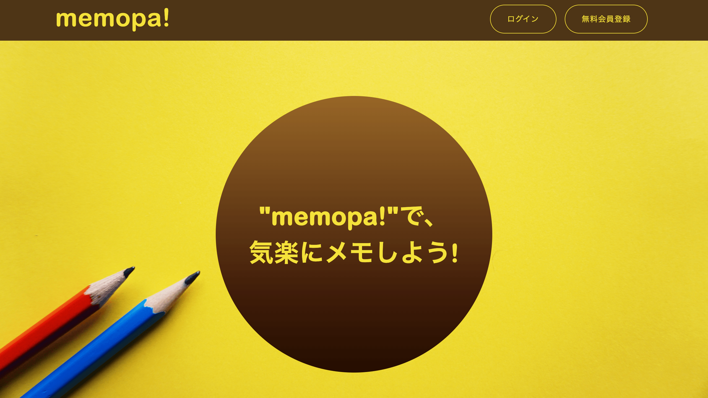
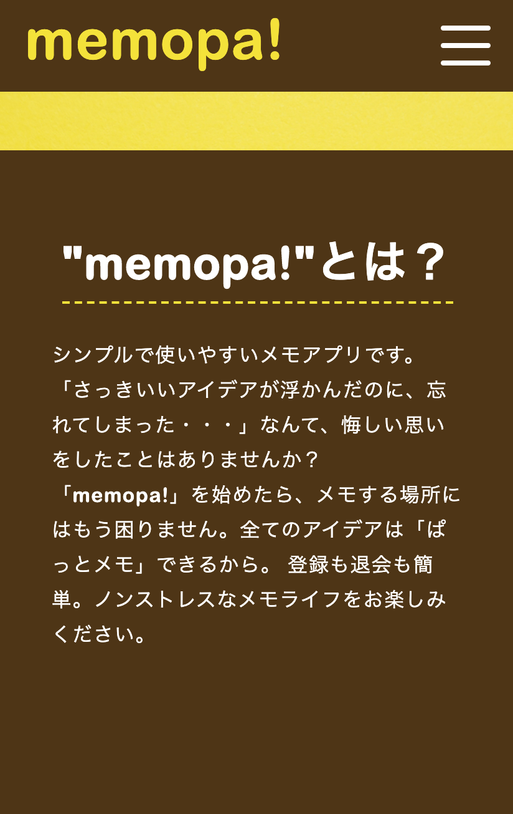
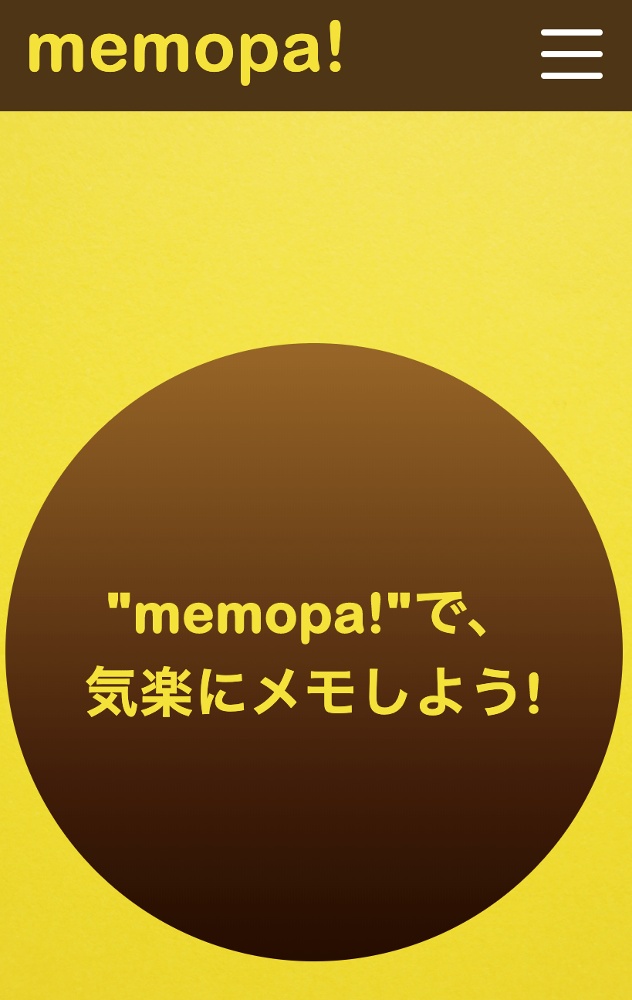

Works
memopa!
  開発環境
Mac OS
制作背景
機能
使用言語・ツール・ソフト
Skills
開発言語
HTML5/CSS3,javascript,php(ver7.4.2)
フレームワーク
jQuery,Laravel(学習中),react(学習中)
データベース管理
Mysql(LAMP環境）
その他ツール・言語
Git、Github、webpack、gulp(3系/4系)、babel、zsh
エディタ
Visual Studio Code
使用OS
Mac OS(ver10.15.3)
その他資格
ITパスポート, 秘書検定2級, 普通自動車第一種運転免許
Profile
Miki
略歴
1992年4月生まれ。大学卒業後、クラフト系エンジニア人材派遣会社での営業職に従事。趣味は歩行瞑想とイラスト。※アイコンは自作です。
エンジニアを目指したきっかけ
子どもの頃に"お絵かきチャット"に触れて感動し、それ以来Web上のコミュニケーションツールに関心をもつようになりました。 そして社会人になり、業務を通して営業支援系システムの恩恵を受けたり、自社エンジニアとの交流することがきっかけとなり、プログラミングに興味をもち、勉強を進めるにつれ、「自身もエンジニアになりたい」と思うようになりました。
どんなエンジニアになりたいか
営業職で培ったヒアリング能力を生かしながら、クライアントの要望・需要をしっかりキャッチアップして設計開発が出来るエンジニアになりたいです。 私が"お絵かきチャット"のおかげで同じ趣味の人と出会い、楽しい時間が過ごせたり、営業支援系システムを使うことで残業時間が減らすことができたように、ITサービスには「人の人生を豊かにするパワー」があると考えています。 まだ勉強しなければならないことも多いですが、将来的にはそのような「パワー」をもつITサービスを自身で閃いたり、クライアントのアイデアをキャッチアップして具現化できるエンジニアになりたいと思っています。